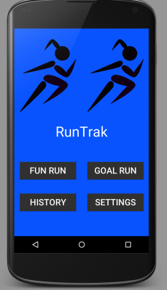
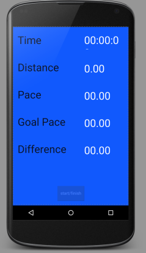
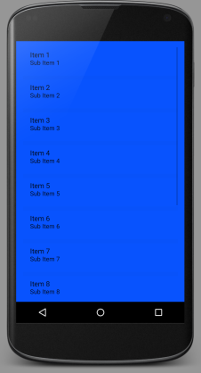

Description
Goal is to help motivate people to challenge themselves while running distances
Directed to:
Training Athletes
People who want to walk and see how far they are going
People who want to actively see their history on their physical activities
Motivation
I noticed that when I was training for Soccer that there was not an application that could motivate me to train efficiently and effectively. I thought this would help athletes better train by themselves and keep them motivated to work harder during on and off season.
Usage Case Scenario
Imagine, you are trying to train for a marathon. You want to start off by running 1 mile, then build up to however miles you have to do. You figure you need to run each mile in a certain amount of time. You use this application by typing in a distance of how far you want to go and how fast you want to attempt to do this in. The application will then start a ticker for the distance remaining as your running, as well as, calculating your speed and whether you need to pick up your pace or continue at your pace. Once, you reach your final destination, it stores the information from the run including the path you took. This way you can look at how your runs have been going to see if your training has been successful.
Screen Shots
  Ryan Condotta and Alexander Lambley TEST
User Interfaces and Demo
Ryan Condotta and Alexander Lambley TEST
Future Extensions
Being able to compare runs that the users desires
Being able to sync vibrations that coordinate to whether the user needs to increase or keep the current pace.
Being able to account for short distance running such as sprints.
Being able to back up your runs to your Google account.
Being able to recognize if you commonly run in certain places, and group these runs together.
Authors and Contributors
Ryan Condotta and Alexander Lambley TEST
Support or Contact
Having trouble with Pages? Check out our documentation or contact support and we’ll help you sort it out.